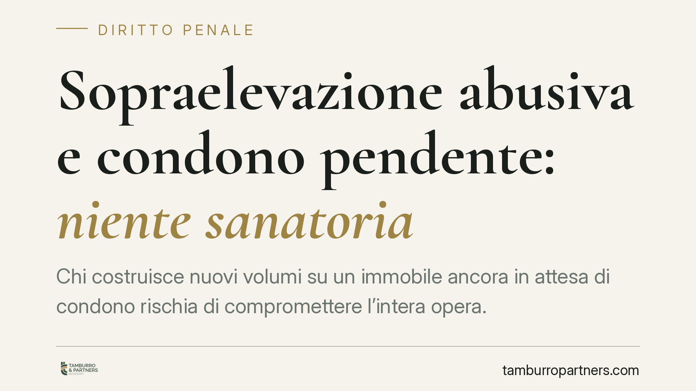

Sopraelevazione abusiva e condono pendente: niente sanatoria
Chi costruisce nuovi volumi su un immobile ancora in attesa di condono rischia di compromettere l'intera opera. Secondo la giurisprudenza penale di legittimità, la sopraelevazione abusiva su una domanda non ancora definita riapre l'illecito originario e preclude l'accesso alle tolleranze del Salva Casa. Un principio che pesa su ogni valutazione di regolarità edilizia, soprattutto in contesti come Ischia.

Sopraelevazione abusiva su condono pendente: il principio
Costruire nuovi volumi su un immobile per il quale pende ancora una domanda di condono non è un dettaglio tecnico: secondo la giurisprudenza penale di legittimità riapre l'illecito urbanistico originario e può rendere insanabile l'intera opera. Il caso recente riguarda una proprietaria di un immobile a Ischia, dove una sopraelevazione abusiva eseguita in pendenza del titolo ha travolto la posizione complessiva del fabbricato.
> Nota di verifica. La pronuncia circola con il numero 23915/2026, ma alla data di redazione l'estremo non risulta verificabile nelle banche dati ufficiali. Riportiamo quindi il contenuto come espressione di un principio consolidato della giurisprudenza di legittimità, invitando a confrontare gli estremi definitivi prima di qualsiasi uso processuale.
Inquadramento normativo
Il ragionamento si muove su due piani distinti, che è bene non confondere.
Sul piano penale, l'art. 44 del D.P.R. 380/2001 (Testo Unico Edilizia) sanziona l'esecuzione di opere in assenza o difformità dal permesso di costruire. Un condono pendente non è un titolo consolidato: finché la domanda non è definita, l'immobile resta in una condizione di irregolarità sospesa. Realizzare nuovi volumi su quella base significa commettere un ulteriore illecito che si salda a quello pregresso.
Sul piano amministrativo, l'art. 34-bis del medesimo Testo Unico disciplina le cosiddette tolleranze costruttive ed esecutive, cioè gli scostamenti minimi che non costituiscono violazione. Questa norma è stata riscritta dal D.L. 69/2024 (Salva Casa): non è un istituto separato o nuovo, ma la versione aggiornata di una previsione già esistente. Il Salva Casa ha ampliato le soglie di tolleranza, ma non ha trasformato in lecito ciò che nasce da un abuso non sanato.
Salva Casa e tolleranze: cosa cambia davvero
In sintesi: la tolleranza non si applica dove manca un titolo edilizio consolidato.
Le tolleranze dell'art. 34-bis presuppongono un'opera legittima, rispetto alla quale si misurano scostamenti marginali. Se l'opera di partenza è abusiva o pende un condono non ancora definito, non esiste un parametro regolare su cui calcolare la tolleranza. Manca, in altre parole, la base su cui l'istituto poggia.
Per questo una sopraelevazione abusiva su un condono pendente non può essere "assorbita" dal Salva Casa. L'intervento aggiuntivo non si limita a creare una nuova difformità: incide sull'opera originaria, ne modifica consistenza e sagoma, e riporta in vita l'illecito che la domanda di condono avrebbe dovuto definire.
Implicazioni pratiche
Take-away: un nuovo intervento su un immobile con condono pendente può far saltare anche la regolarizzazione già sperata.
Per il proprietario il rischio è doppio. Da un lato quello amministrativo, con ordinanza di demolizione estesa all'intero manufatto. Dall'altro quello penale, con la contestazione ai sensi dell'art. 44 D.P.R. 380/2001 e il possibile sequestro dell'immobile.
Va però detto con chiarezza: l'insanabilità non è un automatismo universale. Molto dipende dalla natura del nuovo intervento, dalla sua autonomia rispetto al corpo originario e dallo stato della domanda di condono. Ogni fattispecie richiede una verifica puntuale sui titoli e sulla documentazione tecnica. Letture generiche del Salva Casa, in questo scenario, possono rivelarsi fuorvianti: è prudente non affidarsi a semplificazioni mediatiche.
Cosa fare in concreto
- Verifica lo stato della domanda di condono prima di qualsiasi nuovo intervento: se non è definita, considera l'immobile privo di titolo consolidato.
- Non eseguire sopraelevazioni o ampliamenti su fabbricati con pratiche di sanatoria pendenti senza un previo controllo tecnico-giuridico.
- Richiedi una verifica di conformità a un tecnico abilitato e confronta l'esito con i titoli edilizi esistenti.
- Conserva e aggiorna la documentazione di ogni intervento, distinguendo ciò che è coperto da titolo da ciò che resta in attesa.
- Valuta la posizione complessiva del fabbricato prima di avviare compravendite o finanziamenti: un abuso riaperto può incidere su mutui e trasferimenti.
La regolarità edilizia non si misura sulla singola opera, ma sulla coerenza dell'intero fabbricato con i titoli disponibili. Trascurare questo principio significa esporsi a conseguenze che il Salva Casa non è in grado di neutralizzare.
---
Contributo informativo a cura di Tamburro & Partners Avvocati – Avv. Giuseppe Tamburro. Non costituisce parere legale.
Ogni condominio ha una storia a sé.
Se gestisci un'amministrazione e vuoi un confronto su una specifica questione condominiale, scrivi allo studio. Ti rispondiamo entro un giorno lavorativo.